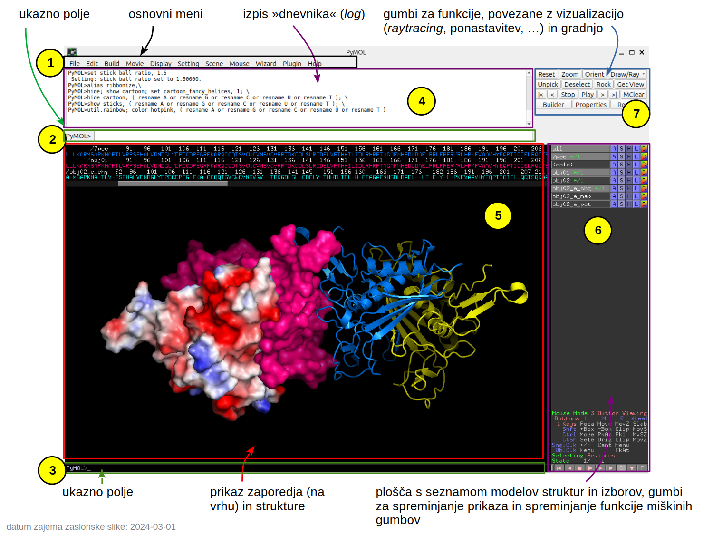

PyMOL#
PyMOL je program za vizualizacijo molekul, ki ga namestimo lokalno, podobno kot UCSF Chimera/ChimeraX. V osnovi gre za odprtokoden program, ki ga je ustvaril bioinformatik Warren Lyford DeLano, kasneje pa ga je komercializiralo podjetje DeLano Scientific LLC (uradna stran). Program je sicer bil še vedno brezplačno dostopen, proti plačilu pa je bilo moč dobiti podporo in nekatere dodatne funkcije. Podobno je danes, ko nad PyMOL-om bdi podjetje Schrödinger, Inc. Sámo ime programa izhaja iz Python in MOLecule.
Uporaba#
Okno programa je sestavljeno iz večih delov, vsak ima svojo funkcijo:

Na vrhu okna najdemo osnovni meni (1), kjer dostopamo do funkcij za nalaganje in shranjevanje podatkov (File), gradnjo modelov (Build), pripravo videoposnetkov (Movie), spreminjanje in druge nastavitve prikaza (Display, Settings), delo s scenami (Scene), spreminjanjem funkcij miškinih gumbov (Mouse; te možnosti so tudi na dnu plošče 6), čarovnikom za prikaz in nekatere funkcije (Wizard), vtičnike (Plugin) ter pomoč (Help), ki nas pravzaprav pripelje na spletne strani z navodili in primeri uporabe.
Številne dodatne funkcije, do katerih včasih sploh ni mogoče dostopati preko menija, so na voljo preko dveh ukaznih polj (2, 3). Karkoli počnemo se izpisuje v dnevniškem polju (4).
Večji del okna, označen s 5, je namenjen 3D prikazu modelov strukture, na vrhu pa se nahaja aminokislinsko ali nukleotidno zaporedje ter oznake ligandov itd., prikaz tega pa moramo posebej vključiti preko osnovnega menija Display > Sequence. Za spreminjanje prikaza posameznih molekul ali njihovih delov je ključno polje 6*. Tukaj najdemo na vrhu seznam vseh modelov, (shranjenih) izborov ipd., vsak od teh objektov/izbrov pa ima 5 gumbov:
A kot Action: fokusiranje, prikaz elektrostatike in interakcij, …;
S kot Show: vklapljanje določenega načina prikaza;
H kot Hide: izklapljanje določenega načina prikaza;
L kot Label: delo z oznakami;
C kot Color: barvanje.
Program omogoča izjemno število funkcij, za napredno uporabo pa se je vsekakor potrebno naučiti nekaj ukazov in sintakse za izbiro molekul ali njihovih delov. Za podrobno seznanitev s programom priporočam branje navodil in ogled videovodičev na YouTube, povezave na nekatere najdete pod dodatnimi viri.
Miška
Priporočam uporabo miške, ki omogoča levi in desni klik ter kolešček (sredinski klik), saj to bistveno olajša manipulacijo struktur v 3D.
Namestitev#
Koda za PyMOL je sicer dostopna (z izjemo nekaj posebnih funkcij), a povprečen uporabnik računalnika hitro naleti na težave pri instalaciji – binarnih paketov (t.j. prevedene kode, ki jo lahko zaženemo kot običajne programe) podjetje Schrödinger ne zagotavlja, razen če plačate kar drago licenco (v tem primeru dobimo t.i. Incentive PyMOL). Finančno oviro lahko enostavno zaobidemo – uporabimo Open-Source PyMOL. Tu so na boljšem uporabniki sistemov GNU/Linux in macOS, ki jih do funkcionalnega PyMOL-a loči načeloma le malce tipkanja po ukazni vrstici ali celo zgolj nekaj klikov po programu za nameščanje paketov.
GNU/Linux#
Najenostavnejša varianta je preko repozitorija (“app store”) Flathub, kjer je na voljo v obliki kontejnerske aplikacije Flatpak (zraven so zapakirane knjižnjice ipd., ki so potrebne za delovanje): Python Molecular Graphics. Za namestitev aplikacij iz Flathub morate imeti nameščen flatpak, kar je opisano za različne distribucije tukaj. Nekatere distribucije imajo ta sistem že vzpostavljen ob namestitvi sistema, primer je Fedora Linux.
Za nekatere distribucije, npr. Ubuntu Linux, je v repozitoriju na voljo že preveden paket, kar je na splošno opisano tukaj. Na primer, v Ubuntu ga lahko enostavno namestite v terminalu s sudo apt install pymol ter nato zaženete s pymol.
macOS#
Priporočam instalacijo binarnega paketa preko Homebrew:
najprej namestite Homebrew, sledite navodilom na spletni strani;
PyMOL namestite preko terminala z
brew install brewsci/bio/pymolter nato zaženete spymol.
Drugi načini instalacije so opisani tukaj.
Windows#
Najlažje je do binarnega paketa moč priti preko oddaje izpolnjenega obrazca, a ta verzija PyMOL-a je namenjena uporabi zgolj v izobraževanju in ima nekatere omejitve, npr. ni mogoče pripraviti kvalitetnih slik struktur pri visoki ločljivosti.
Neokrnjen PyMOL je “najlažje” namestiti po navodilih na PyMOL Wiki in sicer namestite Python ter Microsoft Visual C++, prenesite potrebne wheel pakete (PyMOL, Numpy, …) ter ustvarite izvršilno datoteko. Vso srečo!
Dodatni viri#
-
priporočam ogled Biochemistry student intro, Practical PyMOL for Beginners in strani, navedenih v kazalu “priročnika”
videovodiči na YouTube:
PyMOL (kanal SBGrid Consortium)
PyMOL for Beginners | Basic Tutorial Molecular Visualization of Proteins (kanal Bioinformatics With BB)
PyMOL Tutorials (več videoposnetkov; kanal Molecular Memory)
PyMOL tutorials (long) (kanal PyMOL Ross)
navodila drugih avtorjev:
A Simple Tutorial for PyMOL: Visualising Proteins Using Molecular Graphics (avtor Dr. Dafyd Jones)
Introduction to PyMOL (DeLano Scientific, leto 2009)
A Beginner’s Guide to Molecular Visualization Using PyMOL (avtor Nicholas Fitzkee, leto 2023)
Citiranje
V delih, kjer za analizo in/ali izris slik uporabljate PyMOL, ne pozabite navesti ustreznega vira. Informacije najdete na spletni strani programa, glejte razdelek Citing PyMOL and AxPyMOL.